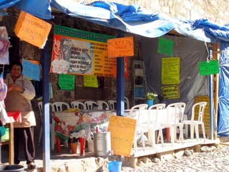

|
|
THIS IS AN ARCHIVED SITE - ESTE ES UN SITIO ARCHIVADO |
|
Please visit
https://www.realde14.com for the current
site |
|
Visite
https://www.realde14.com para ver el sitio actual |
| Home |
Town |
Area |
History |
Links |
| |
| La Esquina Chata | Plaza
Hidalgo, Lanzagorta 2 (488) 887-5060 Breakfasts, Bakery, Italian Pastries, and Really Great Coffee |
|
| El Minero | Calle
Lazangorza Mexican |
|
| El Real |
Calle
Morelos 20 (488) 887-5058 Mexican Cuisine, Italian, Pizzas |
|
| El Meson de la Abundancia | Calle
Lazangorta 11 (488) 887 5044 Mexican Cuisine, Pizzas |
|
| El
Cafe Azul |
Calle
Lazangorta (488) 887-5131 Espresso, Cappuccino, Crepas, Pastries |
|
| El
Cactus |
Plaza
Hidalgo Italian |
|
| El
Eucalipto |
Calle
Lerdo Great steaks Texas style, Pasta |
|
| Doña Macrina | Calle
Ramon Corona Local |
|
| La
Puesta del Sol |
Calle del Cementerio 16 (488) 887 5005 Mexican |
|
| Cocina
Economico |
Calle
Zaragoza Local |
|
| El
Malambo |
Plaza
Hidalgo, Lanzagorta at Allende Argentine |
|
| El
Tolentino |
Callejon
Teran 7 Downstairs restaurant - good food. Upstairs club and bar - live music on the weekends. |
|
El Real Taco |
Calle Zaragoza Pizzas, Tacos, Hamburgers, Jugo Naranja Food to go. |
|
| Food
Stalls in the street |
Calle
Lazangorta Local food. Tacos, chilles rellenos, gorditas, comida corrida. |
 |
Dona Chila |
Menudo, enchiladas, caldo, mole, chilles rellenos, asado, gorditos, tacos. |
|
Dona Emma |
Menudo, enchiladas, caldo, mole, chilles rellenos, asado, gorditos, tacos. |
|
La Cantina |
Calle Constitucion Above Plaza Hidalgo Just a mexican bar with satelite TV |